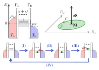

Juliette Monsel¶

Je suis une chercheuse postodoctorale dans le groupe de Janine Splettstoesser au Département de Microtechnologie et Nanoscience à Chalmers University of Technology, à Göteborg, Suède.
J’ai fait mon doctorat sous la supervision d'Alexia Auffèves à l'Institut Néel (CNRS, Université Grenoble Alpes) à Grenoble. Ma thèse, intitulée Thermodynamique quantique et optomécanique, a reçu un prix de thèse Springer et a été publiée dans la série Springer Theses en 2020.
Les sujets de recherches qui m’intéressent sont :
la thermodynamique quantique
les systèmes quantiques ouverts
l’optomécanique
l’optique quantique
le transport électronique
Récent¶
Nouvel article – 5 juillet 2022 – Suggestion des éditeurs dans Phys. Rev. B !
Geometric energy transport and refrigeration with driven quantum dots
Juliette Monsel, Jens Schulenborg, Thibault Baquet, Janine Splettstoesser
We study geometric energy transport in a slowly driven single-level quantum dot weakly coupled to electronic contacts and with strong onsite interaction, which can be either repulsive or attractive. Exploiting a recently discovered fermionic duality for the evolution operator of the master equation, we provide compact and insightful analytic expressions of energy pumping curvatures for any pair of driving parameters. This enables us to systematically identify and explain the pumping mechanisms for different driving schemes, thereby also comparing energy and charge pumping. We determine the concrete impact of many-body interactions and show how particle-hole symmetry and fermionic duality manifest, both individually and in combination, as system-parameter symmetries of the energy pumping curvatures. Building on this transport analysis, we study the driven dot acting as a heat pump or refrigerator, where we find that the sign of the onsite interaction plays a crucial role in the performance of these thermal machines.
Nouvel article – 25 juin 2021
Optomechanical cooling with coherent and squeezed light: the thermodynamic cost of opening the heat valve
Juliette Monsel, Nastaran Dashti, Sushanth Kini Manjeshwar, Jakob Eriksson, Henric Ernbrink, Ebba Olsson, Emelie Torneus, Witlef Wieczorek, Janine Splettstoesser
Ground-state cooling of mechanical motion by coupling to a driven optical cavity has been demonstrated in various optomechanical systems. In our work, we provide a so far missing thermodynamic performance analysis of optomechanical sideband cooling. We examine various performance quantifiers to get a full picture of the thermodynamic process and use them to benchmark different experimental platforms. Importantly, in addition to the standard optomechanical setup fed by coherent light, we investigate two recent alternative setups: replacing the coherent laser drive by squeezed light or using a cavity with a frequency-dependent (Fano) mirror.
This work arises from a collaboration between Janine Splettstoesser’s theoretical group and Witlef Wieczorek’s experimental group to investigate thermodynamics with optomechanical setups.